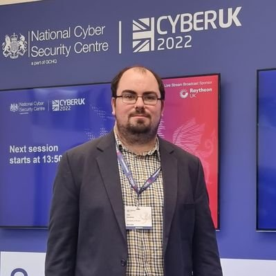

About Us
We have been building test environments and training programmes in industrial control systems security since 2012, with a collective experience of >15 years in developing and delivering hands-on training.
Team
-
Awais Rashid - Director, Instructor
From the very early viruses and trojans to attacks against both IT and OT (Operational Technology used in industrial control systems), Rashid has over 30 years of experience in cyber security. He has led R&D programmes in excess of £30M and has extensive experience of developing training and testing programmes for industrial control systems security. He has led the development of multiple industrial control systems testbeds, first at Lancaster University and then at University of Bristol. He was Director of the MSc in Cyber Security at Lancaster University and established - as founding Director - the MSc in Cyber Security (Infrastructures Security) at University of Bristol, providing graduates with hands-on training on industrial control systems and Industrial IoT security. He is also the editor-in-chief of CyBOK, the Cyber Security Body of Knowledge, which has established foundations for cyber security education and training programmes across the UK. He has collaborated with a wide range of industry organisations and undertook a detailed analysis of data exfiltration attacks by APTs funded by CPNI's iDATA programme, providing briefings for industry organisations and input to the Top 20 Critical Security Controls. -

Joe Gardiner - Director, Instructor
Joe Gardiner has been involved in cyber security research for more than 10 years, and has been engaged in teaching for most of that time. He has been conducting research and teaching in ICS security since joining the University of Bristol in 2018, including leading the continued development of the University's ICS security testbed, one of the most comprehensive facilities nationally and internationally. He has led the design and practical delivery of ICS security units at both MSc and PhD level. He has spoken on ICS security at many events including CyberUK. As part of his research he has disclosed a number of vulnerabilities in ICS products. Joe is heavily involved in industry-led research, regularly collaborating on projects with industry partners. -
Louise Evans - Director
Louise has over 15 years of experience managing multiple research projects, funding portfolios, delivering research and collaborative networks. She manages client relationships for Hacktonics drawing on her extensive track record of supporting teams of researchers and managing strategic work to develop new research proposals and build R&D portfolios.